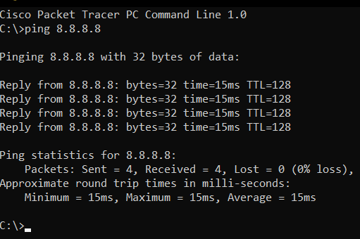

Про програму
Програма реалізує утиліту ping мовою Python,
яка імітує поведінку команди ping у середовищі
Cisco Packet Tracer. Програма доступна у двох варіантах:
консольному (CLI) та графічному (GUI).
Що таке ping?
Ping – мережева утиліта для перевірки доступності хоста в мережі. Вона надсилає пакети протоколу ICMP Echo Request на цільовий хост і очікує відповіді ICMP Echo Reply. За часом відповіді визначається затримка (RTT – Round Trip Time) у мілісекундах.
C:\>ping 192.168.0.3 Pinging 192.168.0.3 with 32 bytes of data: Reply from 192.168.0.3: bytes=32 time=4ms TTL=128 Reply from 192.168.0.3: bytes=32 time<1ms TTL=128 Reply from 192.168.0.3: bytes=32 time<1ms TTL=128 Reply from 192.168.0.3: bytes=32 time<1ms TTL=128 Ping statistics for 192.168.0.3: Packets: Sent = 4, Received = 4, Lost = 0 (0% loss), Approximate round trip times in milli-seconds: Minimum = 0ms, Maximum = 4ms, Average = 1ms
Саме такий формат виводу відтворено у нашій програмі – як у CLI, так і в GUI.
Використані бібліотеки
Усі бібліотеки є стандартними – встановлення pip не потрібне.
subprocess
Запускає системну команду ping та зчитує її вивід у Python.
re
Регулярні вирази для парсингу часу відповіді (time=Xms) з виводу ping.
threading
Виконує пінгування у окремому потоці, щоб GUI не «зависав» під час роботи.
tkinter
Стандартна GUI-бібліотека Python. Використана для GUI-версії програми.
platform
Визначає поточну ОС, щоб обрати правильні параметри команди ping.
sys
Зчитує аргументи командного рядка для CLI-версії (наприклад, IP-адресу).
Порівняльна таблиця
| Бібліотека | Тип | Версія | Призначення |
|---|---|---|---|
| subprocess | Стандартна | Python ≥ 3.3 | Виклик системного ping |
| re | Стандартна | Python ≥ 3.0 | Парсинг виводу |
| threading | Стандартна | Python ≥ 3.0 | Асинхронне виконання |
| tkinter | Стандартна | Python ≥ 3.0 | Графічний інтерфейс |
| platform | Стандартна | Python ≥ 3.0 | Визначення ОС |
| sys | Стандартна | Python ≥ 3.0 | Аргументи CLI |
CLI-версія (ping_cli.py)
Консольна версія відтворює точний формат виводу Cisco Packet Tracer. Підтримує як аргументи командного рядка, так і інтерактивний режим.
Запуск
python ping_cli.py 127.0.0.1 Cisco Packet Tracer PC Command Line 1.0 C:\>ping 127.0.0.1 Pinging 127.0.0.1 with 32 bytes of data: Reply from 127.0.0.1: bytes=32 time<1ms TTL=128 Reply from 127.0.0.1: bytes=32 time<1ms TTL=128 Reply from 127.0.0.1: bytes=32 time<1ms TTL=128 Reply from 127.0.0.1: bytes=32 time<1ms TTL=128 Ping statistics for 127.0.0.1: Packets: Sent = 4, Received = 4, Lost = 0 (0% loss), Approximate round trip times in milli-seconds: Minimum = 0ms, Maximum = 0ms, Average = 0ms
Скриншот програми

Алгоритм роботи
| Крок | Дія |
|---|---|
| 1 | Визначити ОС (Windows / Linux / macOS) через platform.system() |
| 2 | Скласти команду: ping -n 4 host (Win) або ping -c 4 host (Unix) |
| 3 | Запустити через subprocess.Popen і зчитати stdout |
| 4 | Розпарсити кожен рядок регулярними виразами: час, статус відповіді |
| 5 | Вивести статистику: Sent / Received / Lost, Min / Max / Avg |
GUI-версія (ping_gui.py)
Графічна версія будується на базі tkinter (стандартна бібліотека Python). Інтерфейс стилізований під темну тему.
Особливості GUI
Потоки (threading)
Пінгування виконується у окремому потоці – GUI не блокується під час роботи.
Кольоровий вивід
Відповіді – зеленим, таймаути – червоним. Заголовки – синім.
Картки статистики
Після завершення – кольорові картки: Надіслано, Отримано, Втрачено, Мін/Макс/Сер.
Enter для пінгу
Натискання Enter у полі IP запускає пінгування без кліку мишею.
Скриншот програми

Ключові фрагменти коду
Виклик системного ping (subprocess)
Парсинг часу відповіді (re)
Запуск у потоці (threading)
Ієрархія файлів проекту
├── ping_cli.py – консольна версія утиліти ping
├── ping_gui.py – графічна версія (tkinter)
├── ієрархія.txt – ієрархія файлів з підписами
└── site/
├── index.html – сайт з описом проекту (цей файл)
├── python_SCq7rib0ts.png – скриншот CLI-версії (ping 8.8.8.8)
└── python_GUj38yPZqK.png – скриншот GUI-версії (ping 8.8.8.8)
Опис файлів
| Файл | Тип | Призначення |
|---|---|---|
| ping_cli.py | Python | CLI-утиліта пінгування у стилі Cisco Packet Tracer. Підтримує аргументи та інтерактивний режим. |
| ping_gui.py | Python | GUI-версія з темним інтерфейсом, кольоровим виводом і статистикою у вигляді карток. |
| ієрархія.txt | TXT | Ієрархія всіх файлів проекту з підписами. |
| site/index.html | HTML/CSS | Сайт з описом програми: бібліотеки, алгоритм, приклади, ієрархія файлів. |
| site/python_SCq7rib0ts.png | PNG | Скриншот CLI-версії: пінгування 8.8.8.8, вивід у терміналі. |
| site/python_GUj38yPZqK.png | PNG | Скриншот GUI-версії: пінгування 8.8.8.8, картки статистики. |